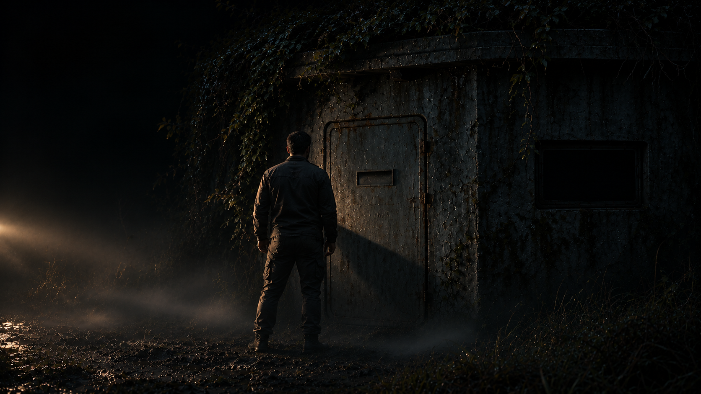
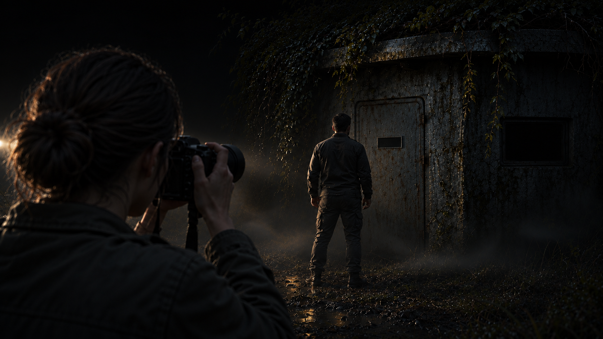
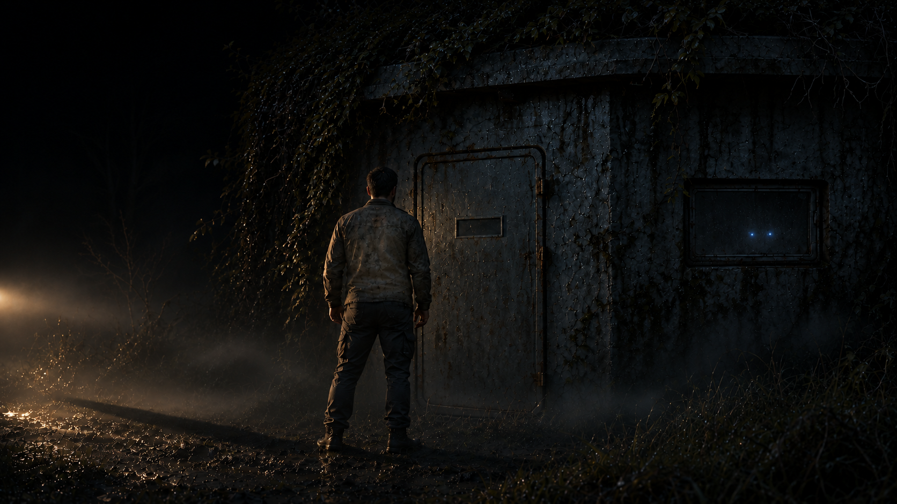
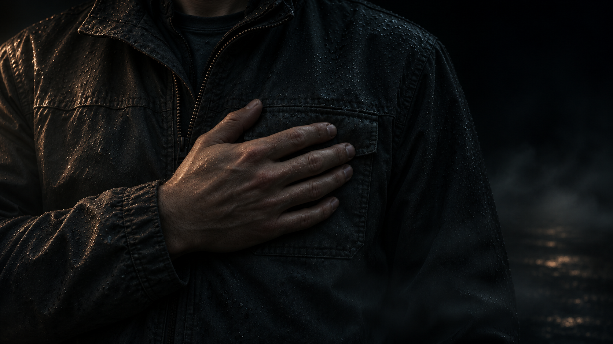

Глава 2 / Камчатка
Призрак в кадре
След из прошлого привёл команду к заброшенному блокпосту.
Джуна наводит камеру на закрытый вход.

Кристиан спрыгнул на землю последним — и тут же пожалел об этом. Ботинок с чавканьем ушёл в грязь по щиколотку. Он осторожно потянул ногу вверх, высвободил её и брезгливо встряхнул. Оглядел раскисшую пустошь, мёртвый бетон блокпоста, туман, в котором тонул свет фар.
— Потрясающе. Если это начало новой эры человечества, то оно пахнет тухлыми яйцами и сыростью. Очень надеюсь, что «ключ к звёздам» идёт в комплекте с химчисткой.
Никто не засмеялся. Кристиан и не рассчитывал. Пока язык плёл привычную колкость, мир оставался понятным: грязь была грязью, ржавая коробка — ржавой коробкой, а он сам — единственным взрослым человеком в компании, поверившей файлу-призраку.
Именно файл не давал ему покоя.
Он снова посмотрел в планшет, прикрыв экран от сырости. Те же цифры. За минуту ничего не изменилось.
— Вадим, — сказал он уже без усмешки. — Я ещё раз прогнал источник. Эти данные не просто старые. Они… адресные.
Вадим повернулся к нему.
— С чего ты взял?
— Лунные архивы молчали полвека. А этот файл всплыл ровно к нашему выезду, с датой прошлого века. И привёл нас сюда. — Кристиан коротко указал планшетом на блокпост. — След остыл сто лет назад, а мы идём по тёплому.
— Знаю, — ответил Вадим.
— И тебя это не пугает?
Вадим промолчал. Пугало. Только Кристиан искал в случившемся нарушение правил, которое ещё можно было объяснить. Вадим всё чаще думал, что правила нарушили давно и специально. Ради него.
Он отвернулся к двери, не сказав об этом ни слова.
Лиана бесшумно двигалась вдоль стены. Её позитронные глаза бросали на бетон мягкий синий отсвет. Она задержалась у входа.
— Фонит слабый остаточный сигнал. Источник — за дверью. Структура сигнала… нетипична.
Пауза оказалась чуть длиннее, чем Вадим ожидал.
— Рекомендую осторожность, — добавила Лиана.
— Ты это уже говорила, — заметил Кристиан.
— Я повторяю то, что считаю важным.
Кристиан посмотрел на неё и не нашёлся с ответом.
А Джуна работала.
Пока они говорили, она крутила кольцо фокуса, ловя контраст: гладкий бок гравимобиля и шершавый бетон бункера. В свете фар туман сворачивался молоком; из него проступали чёрные силуэты веток и снова исчезали. Джуна сняла мох на крыше крупным планом, общий план пустоши, заваренное окно — чёрный прямоугольник справа от двери.
— Свет сложный, — пробормотала она, меняя выдержку. — Слишком глубокие тени.
Наконец навела объектив на вход. Вадим как раз шагнул к двери, попадая в кадр. Джуна нажала спуск почти не глядя: просто зафиксировать масштаб — человек и строение.
Черновой кадр.

Она опустила камеру, чтобы проверить экспозицию.
На маленьком экране высветился снимок. Резкость в норме, свет читаемый. Джуна уже собиралась поднять объектив, когда взгляд вернулся к фигуре у двери.
Что-то было не так с плечами.
Она коснулась экрана, увеличивая изображение.
Пальцы замерли.
Сквозь грудь и плечи Вадима просвечивал бетон. Там, где должен был чернеть плотный человеческий силуэт, висел размытый, полупрозрачный контур. Тело будто соткали из тумана и забыли закрепить.
Джуна подняла глаза.
Вадим стоял у входа. Мокрая одежда, обычные плечи, рука у нагрудного кармана. Она посмотрела на него, потом снова на снимок.
Стена по-прежнему была видна сквозь него.
Джуна протёрла дисплей рукавом. Капля. Грязь на экране. На секунду ей очень захотелось, чтобы дело оказалось в этом.
Она увеличила ещё — до зерна, до отдельных пикселей. Пятно не стиралось, а бетон за фигурой становился только отчётливее.
Воздуха вдруг стало мало. Джуна медленно вдохнула и заставила себя посмотреть на остальной кадр.
Тень.
Фары били сзади и слева. Тень Вадима должна была уходить вправо, на дверь. Джуна сама выбирала положение относительно света, помнила, откуда снимала.
Но на фотографии тень тянулась навстречу фарам.
К лучу.
Она задержала палец у её края, потом перевела увеличение на окно.
Позади прозрачной фигуры, в чёрном прямоугольнике наглухо заваренного окна, горели два синих огонька. Ровных, немигающих. Как глаза.
На снимке они смотрели прямо в объектив.
В неё.

— Вадим, замри!
Голос сорвался. Он обернулся, всё ещё держа руку на кармане.
— Что там? Опять горизонт завален? — Кристиан двинулся ближе.
— Нет. Посмотрите.
Джуна повернула камеру экраном к нему. Вадим вернулся от двери; Лиана подошла от стены. Все трое склонились над снимком.
Несколько секунд никто не говорил.
Кристиан наклонился ближе. Джуна ждала привычной усмешки, но он только посмотрел через плечо на вход.
— Ого, — выдавил он наконец. — Художественно. Это фильтр такой или у тебя матрица сдохла от сырости?
— Никаких фильтров.
— Я пытаюсь понять, что вижу.
— Я тоже, Крис. Но матрица не рисует глаз в заваренном окне.
Вадим смотрел на свою фигуру. На бетон, проступавший там, где была его грудь.
— Когда ты сняла?
— Только что. Ты шагнул к двери.
Он кивнул. Этот шаг он помнил. Помнил, как остановился, как положил руку на карман. Ничего особенного с ним не произошло.
Джуна вернула снимок к общему виду и нажала «Заблокировать файл», сохраняя исходник в защищённом секторе памяти. Камера осталась у неё в руках.
Она подняла взгляд на Вадима. Перед ней стоял обычный человек — усталый, вымазанный в болотной жиже, с ржавой находкой у сердца. Джуна ещё раз посмотрела на него, словно надеялась заметить что-нибудь, что помогло бы понять фотографию.
— Я оставлю кадр, — тихо сказала она, опуская камеру. — Просто чтобы убедиться, что я не сошла с ума.
Вадим не ответил. В кармане, под ладонью, тёплый металл лежал тихо и ровно — и от этого спокойствия почему-то было страшнее всего.
